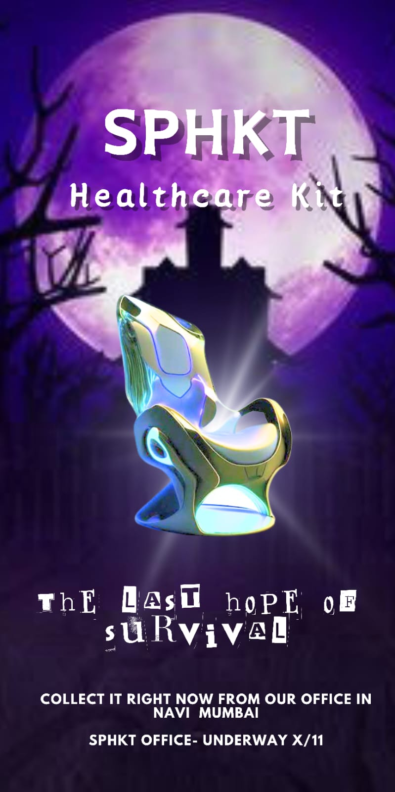

- Our Mission
- Product
-

Our Mission
ATTENTION SURVIVORS!
We live in an era where the human enhancement has gone totally out of control. All of us thought there was no stoping to this plague and madness. None of us thought that advancement in technology would lead to a catastrophe like cyberpsychosis, rather all of us celebrated the innovations. We all had lost our hopes, but not the brilliant minds of Shankhin Sharma, Puru Priyamvad Verma, Hariaksh Maggo, Kenneth Gomes and Tejinder Singh of St Columba's. With the help of their ever lasting expertise and knowledge, they have developed the SPHKT chair, a treatment and cure to all of our main misery. Using this SPHKT chair, we can once again go back to the sunny and happy days that we remember each and every day.
OUR PRODUCT "THE SPHKT CHAIR"
During the apocalypse and cyberpsychosis, the SPHKT team developed a chair. When a person sits on the chair, he attaches the usbs on himself. Those usbs act and deactivate the chips. After this, the chair encloses in a room and auto surgery is performed on the person to remove the chips entirely, after which he becomes a normal man. This chair has helped save a lot of lives in the city of Navi Mumbai . It is free of cost , the purpose is to not to earn profit but to help people and save their lives . It is easily accessible to those who might need it and designed to be very friendly to sit , be able to work continuously for long durations of time , be durable and support heavy weights .THE SAVIOURS
Shankhin Sharma is a scientist from the prestigious Columbas University . He was the one who built the mechanism of the renowned and extremely essential SPHKT chair, which is used for deactivation of chips and diverts the peril of cyberpyschosis .
Puru Priyamvad Verma is a software engineer from the prestigious Columbas University. He designed the software of the SPHKT chair. The team worked on the engineering and scientific marvel for that past decade.
Hariaksh Maggo was the designer of the body surface of the SPHKT chair , he made the chair more transportable and user-friendly .
.png)
Tejinder Singh was the head supervisor of the team which created the SPHKT chair. His input was priceless and invaluable, the saviour product wouldn't have been possible without him